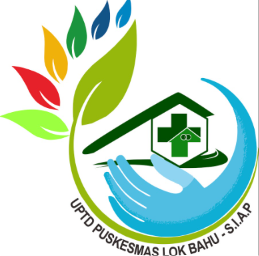

Belum Ada Hasil Skrining
Anda belum mengisi kuesioner kesehatan jiwa pada sesi browser ini.
Silakan mulai skrining mandiri.

Hasil Skrining
Anda belum mengisi kuesioner kesehatan jiwa pada sesi browser ini.
Silakan mulai skrining mandiri.
Jl. Ir. H. Nusyirwan Ismail, M.Si. (Ring Road 2) RT. 15, Kel. Lok Bahu, Kec. Sungai Kunjang, Samarinda 75129
Layanan Jiwa: Senin–Sabtu, 07.30–12.00 WITA • WA: +62 851-7117-2121
Jika mengalami tekanan psikologis atau skor di atas batas normal, diskusikan langkah intervensi dengan dokter atau konselor Puskesmas.
Bicarakan apa yang dirasakan dengan keluarga, pasangan, atau orang terdekat yang dapat dipercaya.
Cukupi waktu tidur malam (7–8 jam), lakukan relaksasi pernapasan, dan luangkan waktu untuk aktivitas positif.